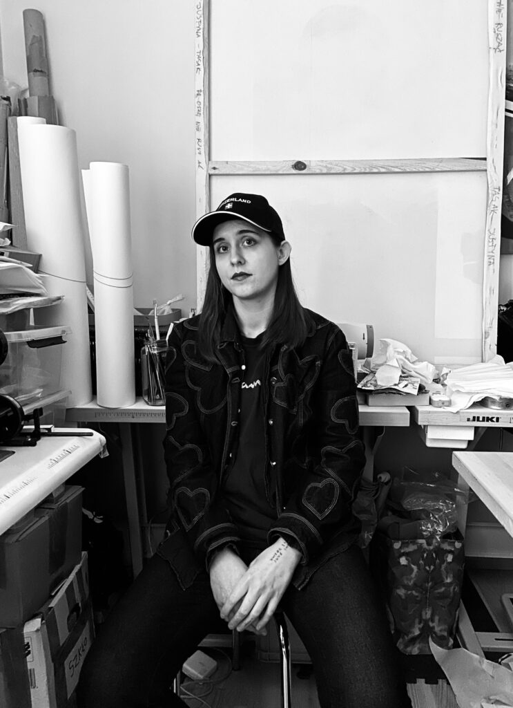
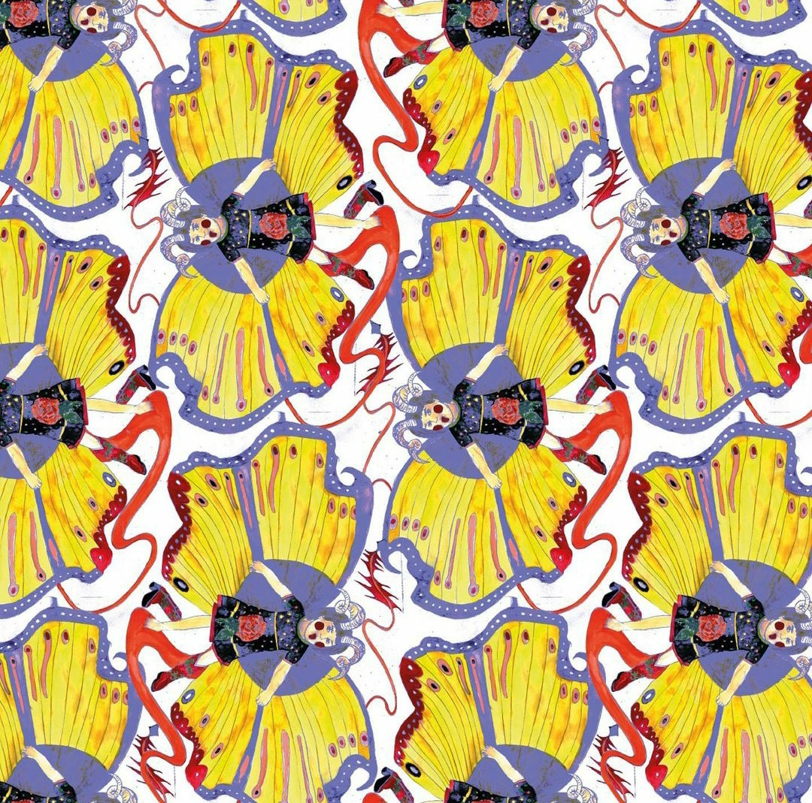

Born and raised in Poland, I finished college of Fine Arts with Bachelor in Fashion Design. My interest in clothes was always present, but the real work in the industry started just before my college, when I was assistant for Yulia Babich in her atelier, in Szczecin. The environment of clothes design was inspiring and made me fall in love with the fashion itself.



